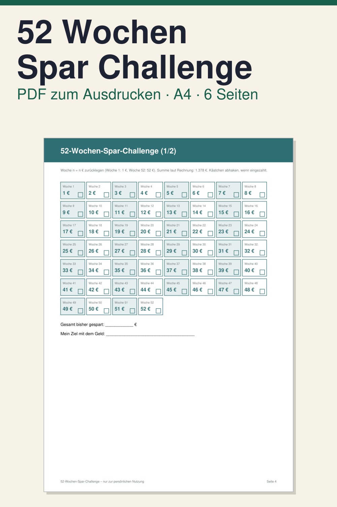

52 Wochen Spar Challenge zum Ausdrucken

Bei der 52-Wochen-Spar-Challenge legen Sie in Woche 1 einen Betrag zurück, in Woche 2 einen höheren, und so weiter bis Woche 52. Diese Vorlage zum Ausdrucken hilft Ihnen, den Überblick zu behalten und jede Woche abzuhaken. Sie ist für alle gedacht, die mit einem klaren Rhythmus auf ein Sparziel hinarbeiten möchten.
Das PDF hat 6 Seiten im Format DIN A4 hochkant, auf Deutsch. Enthalten sind: Deckblatt und Anleitung (2 Seiten), eine Zielseite (Wofür sparen Sie, bis wann, wo liegt das Geld), die Challenge-Seite mit allen 52 Wochen zum Abhaken, die zweimal enthalten ist, zum Beispiel für zwei Personen oder als Ersatz, und ein Monatsrückblick zum Eintragen von Einzahlungen und Gesamtstand.
So nutzen Sie sie: PDF herunterladen, ausdrucken, gut sichtbar aufhängen, jede Woche den Betrag zurücklegen und das Kästchen abhaken. Das PDF ist nicht digital ausfüllbar. Es ist ein digitaler Download, es wird nichts per Post verschickt. Die Vorlage ist eine Aufschreibhilfe, sie ist keine Finanz-, Rechts- oder Steuerberatung und verspricht keine bestimmten Ergebnisse.
Hinweis: Alle Inhalte von Klarblatt, auch Vorlagen, Texte und Videos, werden vollständig von KI (Claude, Anthropic) erstellt, ohne kreativen Beitrag eines Menschen.
Vorlage vollständig von KI erstellt, Layout per Software erzeugt.